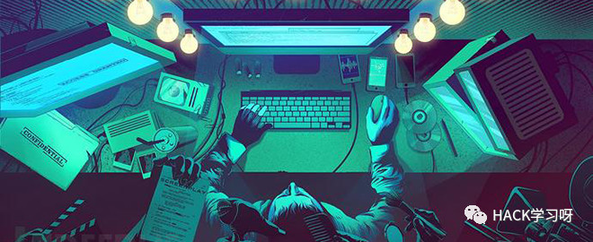

二进制安全学习规划指南

参考来源：
讲师杨坤博士是国内网络安全战队蓝莲花战队(blue-lotus)的队长，第一次将国内团队带入世界级 DEFCON CTF 比赛总决赛，成为历史上首次突破，并连续打入四年，在2016年创造了全球第二名的中国历史最好成绩，此外，也将国际CTF的先进技术带回国内，负责举办了国内规模最大的 BCTF 大赛，带动了国内整体安全攻防水平向国际化靠拢。
Hacking三步曲
理解系统（Understanding）
系统性的基础课程学习，深入理解计算机系统运作机制。
破坏系统（Breaking）
学习与创造漏洞挖掘与利用技巧
重构系统（Reconstruction）
设计与构建系统防护
基础课程学习
核心基础课程——计算机的工作原理
体系结构
https://www.ece.cmu.edu/~ece447/s15/doku.php
Labs: implement a MIPS CPU using Verilog
机器指令与汇编语言
指令的解码、执行
内存管理
CPU的设计与实现
CMU 18-447 Introduction to Computer Architecture
编译原理
http://web.stanford.edu/class/cs143/
PA: Compilers for cool language
自动机、词法分析、句法分析
运行时
程序静态分析
编译器的设计与实现
Stanford CS-143 - Compilers
操作系统
https://pdos.csail.mit.edu/6.828/2016/
Labs: Implement jos
Xv6 , a simple Unix-like teaching operating system
系统的加载与引导
用户态和内核态、系统调用、中断和驱动
进程于内存管理、文件系统
虚拟机
操作系统的设计与实现
NT 6.828 - Operating System Engineering
其他基础课程——系统软件开发基础
编程语言
网络协议
算法与数据结构
漏洞挖掘与利用
快速入门——CTF
蓝莲花战队CTF成长秘诀——坚持超过一年的以赛代练
9447CTF、CCC CTF、HITCON CTF、Plaid CTF、Boston Key Party、DEF CON CTF
CTF 历史资料库：https://github.com/ctfs
Wargames:
https://pwnable.kr/
http://smashthestack.org/
如何从CTF赛棍转型
CTF
短时间（48h）、目标代码量少、漏洞容易发现、利用技巧千奇百怪
实战——长期做一道很难的CTF题
长期（长年累月）、目标代码量大、漏洞难以发现、利用技术有套路可循
实战
目标
Linux/Android
Freebsd
Apple iOS
Sony PS4
JavaScript Engine
ActionScript Engine
PHP/Java Sandbox Escape
HTTP/SMB/DNS/UPnP Server
网络协议的实现
脚本引擎
内核
准备
逆向分析+代码审计
模糊测试
快速逆向与快速理解
对漏洞的理解
测试框架
样例生成的想法
学习历史漏洞 - CVEs
挖掘新漏洞
构建系统防护
研究与探索
漏洞自动挖掘技术
静态程序分析
符号执行
机器学习
漏洞利用防护机制
Intel SGX
控制流完整性（CFI）
拟态

推荐阅读：
https://www.zhihu.com/question/263379702
参考来源：ichunqiu<二进制安全规划指南>
如有侵权，联系删除